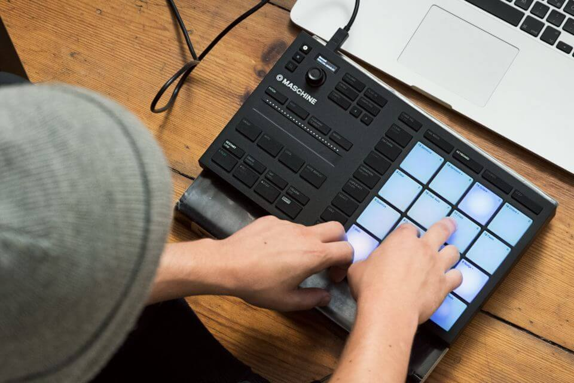
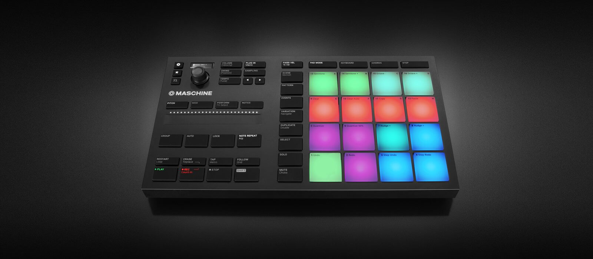
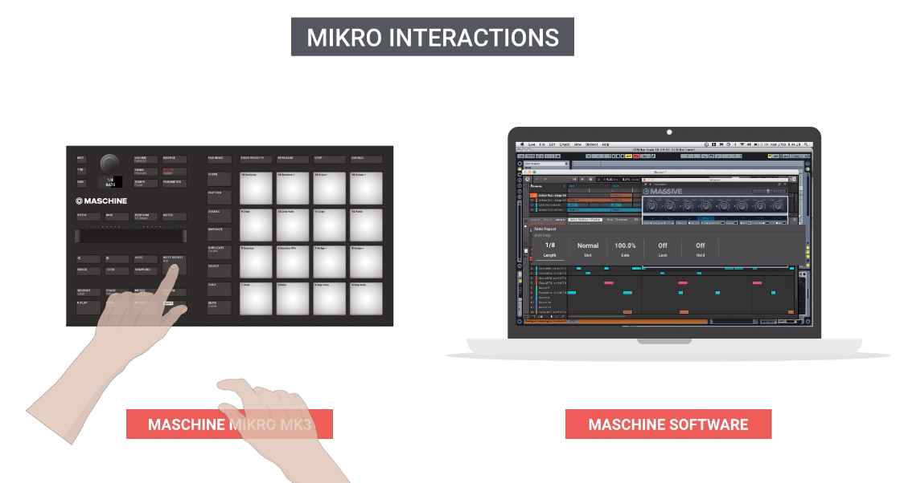

07/17 | ux | interface | workflow
Working with Native Instruments, I was tasked with creating concepts for the MASCHINE Mikro and designing a new interface that allows creative functionality in a micro package whilst staying faithful to the MASCHINE legacy. This was to offer the MASCHINE experience at a cost effective price and entry level.
With the release of the Maschine MK3, many new workflows and features were established. After speaking with some of our more prominent MASCHINE MK3 users, I began to outline features which would be considered crucial for the Maschine experience. In order to keep this experience seamless, I aimed for consistency across devices - changing as little workflows where possible. This allowed for ease of transition from smaller device, to the larger and vice-versa.
After several revisions, and consultations with our users and the MASCHINE software designers, the features and ‘Mikro’ interactions were decided.
The final concepts and layout achieved the values and concept that was strived for earlier in the project.
You can see further details of MASCHINE Mikro directly at Native Instruments here.